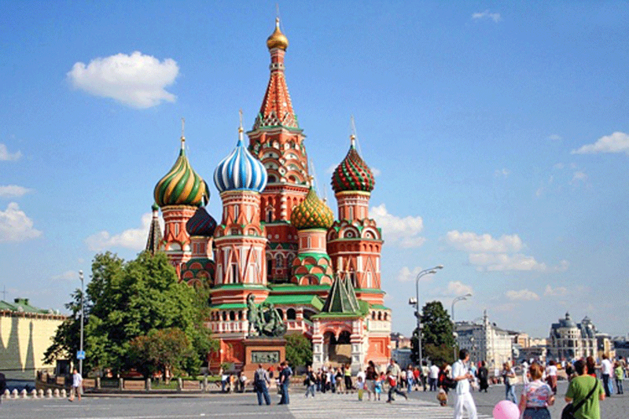
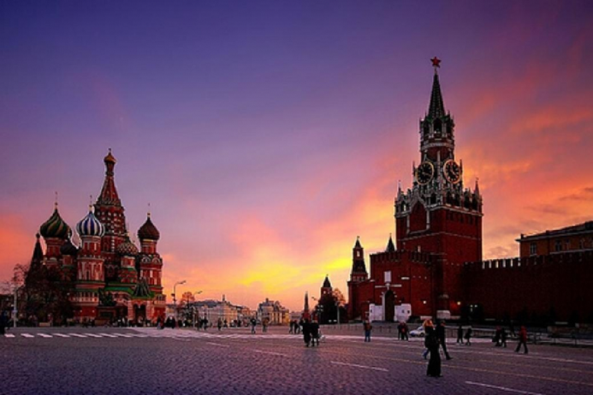

Russia
[Information]
[why]
<-Back to Home
Information
 
러시아의 수도, 모스크바
크렘린 궁전과 붉은 광장, 성 바실리 대성당, 볼쇼이 극장 등 볼거리가 다양하다.
모스크바의 모습을 영상으로 보고 싶다면
여기
로!
Why
사실 정확히 하고 싶은 것은 시베리아 횡단 철도 여행이다.
이 열차를 타고 모스크바까지 갈 수 있다.
[TOP]